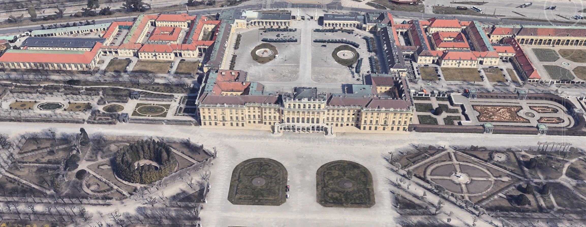

Pałac Schönbrunn (niem. Schloss Schönbrunn) – pałac wraz z parkiem znajdujący się w 13. dzielnicy Wiednia, Hietzingu. Według przekazów nazwę zarówno parku jak i pałacu przypisuje się cesarzowi Maciejowi Habsburgowi, który podczas polowania w 1619 znalazł tu źródło artezyjskie i miał je określić mianem pięknego. Sam pałac został zbudowany w XVII–XVIII w. na zlecenie cesarza Leopolda I, zaprojektowany przez Johanna Bernharda Fischera von Erlacha. W 1996 pałac został wpisany na listę światowego dziedzictwa UNESCO.
Najwcześniejsza wzmianka wzgórza i okolicy pochodzi z roku 1311. Miejscowość nazywała się wówczas Khattermühle. Od 1312 należała do klasztoru kanoników regularnych w Klosterneuburgu. W XV i XVI stuleciu zmieniała kilkakrotnie właścicieli, by w 1548 zostać nabytą przez późniejszego burmistrza Wiednia Hermanna Bayra, który obok istniejącego młyna zbudował dwór zwany Katterburg. W 1569 cesarz Maksymilian II po zakupie rozległej posiadłości obejmującej zarówno wzgórze jak i dolinę rzeki Wien przekształcił ją w tereny myśliwskie, gdzie polowano m.in. na dziki i jelenie. Ich centrum stanowił zbudowany w 1570 dwór myśliwski. Powstały wówczas także stawy rybne i ogród bażanci w którym hodowano także egzotyczne indyki i pawie. W 1612, w czasach cesarza Macieja, miejscowość zmieniła nazwę na Schönbrunn, a sam władca znacznie rozbudował istniejący tu dwór myśliwski.
Został wzniesiony na południowy zachód od Wiednia, w Parku Schönbrunn. Barokowy wystrój został nadany za panowania Marii Teresy. Kolor żółty, na który została pomalowana elewacja, był jej ulubionym. Wnętrza pokryte są licznymi freskami i sztukaterią. Apartamenty udostępnione są zwiedzającym. W przybudówce znajduje się obecnie Muzeum Powozów. Sam teren wokół pałacu to ogród w stylu francuskim, w którym znajduje się Palmiarnia. Na wzgórzu, z którego roztacza się widok na pałac i Wiedeń, wzniesiona została Glorietta. Poniżej wzgórza znajduje się Fontanna Neptuna.